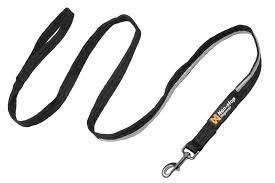

1 Bases de données
1.1 Vocabulaire
| Français | English |
|---|---|
| le confinement | the lockdown |
| un ordinateur portable | a laptop |
| 14 sur 20 | 14 out of 20 |
| s’attendre à qqch | to expect stg |
| des résultats mitigés | mixed results |
| l’opinion majoritaire | the majority opinion |
| tranché, clair | clear-cut |
| appartenir à | to belong to |
| la plupart | most |
| un tiers | a third |
| une échelle | a scale |
| un stage | an internship |
| évaluer | to rate |
| un veau | a calf |
| un mollet | a calf |
| augmenter | to increase |
| à l’étranger | abroad |
| la renommée | standing |
| épouvantable | horrendous |
| une tension | a strain |
| libérer | to unleash |
| au cours de | throughout |
| s’appliquer à | to apply to |
| éviter | to avoid |
| de l’agitation politique | unrest |
| réussir à, parvenir à | to manage to |
| la croissance | growth |
| la famine | starvation |
| un moyen | a means |
| une percée | a breakthrough |
| assister à | to attend |
| accomplir | to achieve |
| antérieur, précédent | previous |
| défendable | arguable |
| stupéfiant, incroyable | staggering |
| un bond | a leap |
| la foi | faith |
| une récolte | a harvest |
| se produire | to occur |
| (s’) accélerer | to quicken |
| à partir de X | from X onwards |
| un réseau | a network |
| sous-tendre | to underpin |
| une décennie | a decade |
| considérable | tremendous |
| croissance, progrès | upswing |
| aller de pair | to go hand in hand |
1.2 Traductions
| Français | English |
|---|---|
| Avec qui habites-tu ? | Who do you live with? |
| Combien de temps cela te prend-il pour aller à l’École Estienne ? | How long does it take you to go to École Estienne? |
| Où habitais-tu l’année dernière ? | Where did you live last year? |
| Es-tu déjà allé(e) au Musée de la Bourse de Commerce qui a ouvert l’année dernière ? | Have you already been to the MBC which opened last year? |
| Regarde ! Ils installent de nouveaux ordinateurs ! | Look! New computers are being installed. |
| On m’a dit qu’ils ne fonctionnaient pas très bien… | I was told they didn’t work properly… |
| Ils sont en train d’examiner le problème. | The issue is being looked into. |
| On dit de ces ordinateurs qu’ils ont coûté très cher. | These computers are said to have cost a lot. |
1.3 Prononciation
| Word | Sounds | Stress | Received Pronunciation | General American |
|---|---|---|---|---|
| abroad | /01/ | /ə.’brɔːd/ | /ə.’brɔːd/ | |
| pressure | /10/ | /’preʃ.ə/ | /’preʃ.ər/ | |
| occur | /01/ | /ə.’kɜː/ | /ə.’k3r ː/ | |
| unique | /01/ | /ju.’niːk/ | /ju.’niːk/ | |
| achieve | /01/ | /ə.’tʃiːv/ | /ə.’tʃiːv/ | |
| empire | /100/ | /’emp.aɪ.ə/ | /’emp.aɪ.ər/ | |
| era | /10/ | /’ɪər.ə/ | /’er.ə/ | |
| scientific | /2010/ | /ˌsaɪ.ən.’tɪf.ɪk/ | /ˌsaɪ.ən.’tɪf.ɪk/ | |
| breakthrough | /10/ | /’breɪk.θruː/ | /’breɪk.ˌθruː/ | |
| ancient | /10/ | /’eɪnʃ.ənt/ | /’eɪnʃ.ənt/ |
1.4 Échéances
| Échéances | Description | Jours restants |
|---|---|---|
| 17/09/2021 | Préparer le rapport oral du sondage de début d’année, pour les équipes qui ne sont pas passées. | 0 |
1.5 Flashcards
| Images | Expressions |
|---|---|
| a grip | |
| a harvest | |
| a leap | |
|  | a leash |
| a steamship | |
| potato blight | |
| to burst | |
| to stagger |